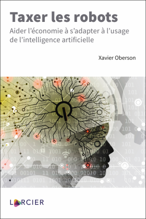

TAXER LES ROBOTS
Auteur:
Xavier Oberson
Lieu d'édition:
Bruxelles
Maison d'édition:
Larcier
Date de publication:
Juin 2020
ISBN:
978 2807 9213 99
Présentation:
Le développement sans précédent de l’intelligence artificielle dans tous les secteurs de l’économie est de nature à provoquer d’importantes disruptions dans le marché du travail et stimuler encore les inégalités dans le partage des richesses. En particulier, de nombreuses places de travail pourraient se transformer fondamentalement, voire disparaitre. L’auteur suggère une taxation des robots comme une réponse possible à ce changement et aux importantes pertes de recettes fiscales et de sécurité sociale qui pourraient en résulter. En se fondant sur les principes fondamentaux, tant économiques que juridiques, l’ouvrage explore différents modèles d’imposition qui pourraient être mis en œuvre, tout d’abord, pour la taxation de l’utilisation des robots, telle qu’une taxe sur l’automatisation ou sur le « salaire théorique » et, ensuite, sur les robots eux-mêmes. Différentes problématiques liées à cette question sont ainsi analysées, à savoir la définition des robots à des fins fiscales, la difficulté d’attribuer une capacité contributive aux robots et la compatibilité d’un tel régime avec le droit fiscal interne et international.
Ce livre est le premier de ce type qui explore en détail l’idée de taxer les robots. Il devrait constituer une source de réflexion stimulante pour tous les chercheurs et les personnes chargées de mettre en oeuvre des politiques économiques et fiscales ou intéressées par le développement de l'intelligence artificielle et des robots. Les avocats, les juristes ou les fiscalistes devraient également bénéficier des vues de l'auteur sur un modèle futur d'imposition à l'heure de l'intelligence artificielle et de la digitalisation de l'économie.
Une version en anglais de cet ouvrage est disponible sous le titre "Taxing Robots", paru en 2019 chez Edward Elgar : www.obersonabels.com/fr/publications/taxing-robots
Sommaire
Préface
Chapitre 1. Introduction générale
Chapitre 2. Développement de l’IA et des robots
Chapitre 3. Définition de l’IA et des robots
Chapitre 4. Robots comme nouvelles personnes juridiques
Chapitre 5. Arguments en faveur d’une taxe sur les robots
Chapitre 6. Imposition des revenus courants (profits) des robots
Chapitre 7. Évolution de la fiscalité de l’économie numérique et impact sur la taxation des robots
Chapitre 8. TVA sur les activités des robots
Chapitre 9. Conception d’une taxe sur les robots
Chapitre 10. Taxes sur les robots d’un point de vue international
Chapitre 11. Financement des coûts de disruption et d’automatisation (notamment le revenu de base universel)
Chapitre 12. Constatations générales et conclusion
Bibliographie
Index